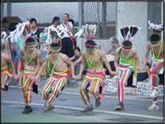
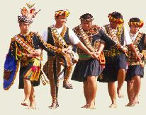
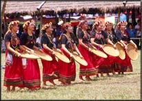

原住民族舞蹈的內涵
要認識原住民族舞蹈，理解其深層意涵，必須要知道原住民族為什麼跳舞、在什麼情況下跳舞。從「原住民族舞蹈」一詞就可理解，其重點在於集體舞蹈，然而從跳舞的時機、動機與情境，我們可以簡單地將原住民族舞蹈分為以下幾種類型：
• 祭典舞蹈：

指的是部落集體強化儀式（rites of intensification，例如：收穫祭、團結祭、或複合式的年祭） 時所跳的舞蹈，例如阿美族的年祭、排灣族的五年祭、卑南族的大獵祭、鄒族的戰祭、賽夏族的矮靈祭等祭典時所跳的舞蹈。有的族群會用一個特別的名稱來涵括祭典舞蹈，例如：阿美族特別把祭典舞蹈稱為 malikuda 。不論有沒有特別的名稱，祭典舞蹈在族人的心目中向來佔有神聖的地位，相關的禁忌、規範也最多，例如：不能隨意在非祭典情境唱跳、男女或長幼之舞分門別類等等。祭典舞蹈通常具有完整的結構與豐富的形式，往往成為各族舞蹈的經典。
• 社會儀禮舞蹈：

指的是特定人群在重要關頭舉行社會儀禮（例如：出生、成年禮、男子從軍和退伍、婚禮、生日、新屋落成、通過應試等社會成就、乃至喪禮與除喪禮）時所跳的舞蹈。這一類舞蹈通常不若祭典舞蹈嚴肅，但亦隨儀禮的性質與人群聚合的規模不同，而有表現上的差異。例如：除喪禮的舞蹈必然比出生禮或婚禮舞蹈顯得嚴肅；而成年禮和新屋落成禮的舞蹈往往比生日宴會時所跳的舞來得正式。
• 一般生活舞蹈：

指的是兩、三人（或更多）在日常生活的聚集中所跳的舞蹈，例如：勞動、休閒娛樂。這類舞蹈通常較為隨機，也最不具形式上的限制與約束，甚至具有強烈的即興精神。
上述不同的原住民族舞蹈類型，不但在外觀上看的人可以辨認得知，族人們心中更有一把尺予以界定，注重還原各類舞蹈的情境、不加以混淆張冠李戴，是理解原住民族舞蹈的第一步。更重要的是，我們千萬不要用自己認知中的舞蹈去論斷原住民族的肢體表現，否則很容易產生刻板印象。我們應該了解原住民族舞蹈有其社會與形式原則，掌握這些原則之後，我們才能深入欣賞原住民族舞蹈的精神與美。